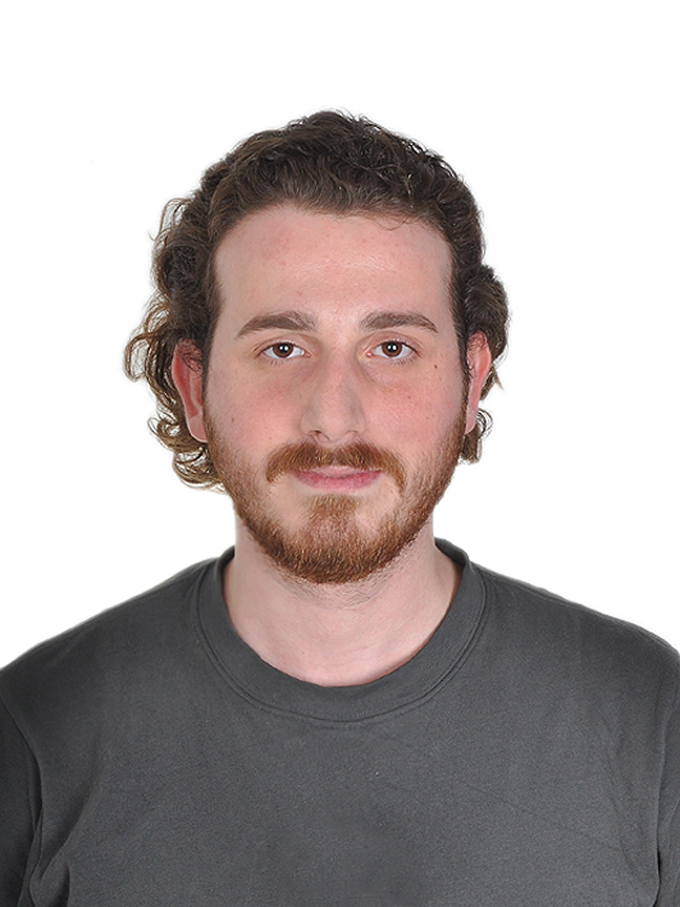

2024 mezunu Bilgisayar Mühendisi. .NET ekosisteminde Clean Architecture, mikroservis ve event-driven sistemler üzerine açık kaynak projeler geliştiriyorum.
// FatihKayaci.cs public class FatihKayaci : IDeveloper { public string Name => "Fatih Kayacı"; public string[] Stack => new[] { ".NET 10", "Clean Architecture", "CQRS", "Microservices", "RabbitMQ", "Redis", "PostgreSQL", "Docker" }; public bool IsAvailable => true; public bool OpenToWork => true; }

2024'te Bilgisayar Mühendisliği'nden mezun oldum; şu anda yüksek lisans yapıyorum. Backend sistemler inşa etmek, mimari problemleri çözmek ve ölçeklenebilir yazılım geliştirmek benim için hem meslek hem de tutkudur.
.NET ekosisteminde Clean Architecture ve CQRS ile yapılandırılmış projelerde mikroservis, event-driven sistemler ve real-time özellikler üzerine yoğunlaşıyorum.
Katsis adlı bir SaaS yan projesinde co-founder olarak PHP ve Linux sunucu yönetimi deneyimi de kazandım. Temiz, bakımı kolay ve mühendislik pratiklerine uygun kod yazmak önceliğim.
Üniversite arkadaşlarımla kurduğum, bina/apartman yönetimi için multi-tenant SaaS platformu (Cyftech). Backend tarafında REST API tasarımı, veri modelleme ve tenant izolasyonunu üstlendim; Linux sunucu kurulumu ve deployment sorumluluğu bende.
Restoranlar için SignalR ile gerçek zamanlı veri senkronizasyonu sağlayan tam yığın POS ve mutfak yönetim sistemi. k6 load testleri ile 100 eşzamanlı kullanıcıda %0 hata oranı ve 3.7s p(95) yanıt süresi doğrulandı. Docker Compose + GitHub Actions CI/CD.
Öğrenci, veli, öğretmen ve okul yöneticilerini tek çatı altında toplayan çoklu-okul (multi-tenant) okul takip sistemi. ASP.NET Core Web API'de Clean Architecture (Domain/Application/Infrastructure/API) ve MediatR + FluentValidation ile CQRS; JWT authentication, rol bazlı yetkilendirme ve okul bazlı veri izolasyonu. React + TypeScript + Vite frontend'de öğretmen, müdür ve öğrenci için ders programı, not girişi, yoklama, sınav/ödev oluşturma ve sınıf istatistikleri panelleri geliştiriliyor.
Dört bağımsız mikroservisten oluşan e-learning backend sistemi (Identity, Catalog, Enrollment, Notification). Database-per-service deseni; servisler arası iletişim REST ve RabbitMQ event'leri ile sağlanıyor. Redis destekli idempotent event işleme, Polly resilience politikaları.
Üniversite arkadaşlarımla yürüttüğümüz bina yönetimi SaaS yan projesi · 3 kişilik ekip
Askerlik yüksek lisans nedeniyle 2029'a kadar tehirli. Türkiye genelinde çalışmaya ve relocation'a açık. Türkçe (anadil) · İngilizce (B2)
Mimari kararlar, .NET ipuçları ve backend geliştirme üzerine yazılar hazırlıyorum.
Yeni fırsatlara, açık kaynak işbirliklerine ve ilginç projelere açığım. Mesajınızı bırakın.